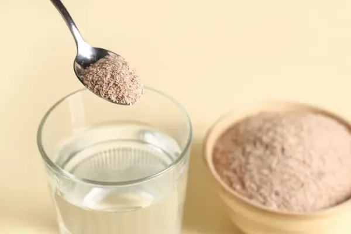
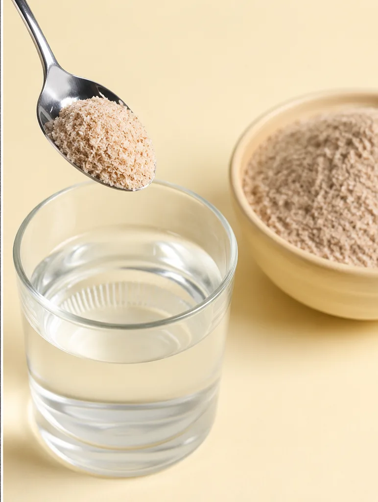

What Is Ispaghula Husk?
Ispaghula husk is another common name for psyllium husk, especially in the UK, Europe and Commonwealth markets. In India, the same product is widely known as isabgol husk. It is obtained from the outer covering of Plantago ovata seeds and is valued for its natural fibre content, water absorption and swelling properties.
Buyers searching for bulk ispaghula husk for export are usually not casual readers. They are often importers, nutraceutical manufacturers, food ingredient distributors, herbal product companies, pharmaceutical buyers or private-label brands looking for a consistent Indian supply source. For these buyers, the main requirement is not only a low price. They need the right grade, clean material, export packing, reliable documentation and clear supplier communication.
Why Source Bulk Ispaghula Husk from India?
India is one of the most important origins for psyllium and ispaghula husk. Gujarat has a strong role in this supply chain because of established cultivation areas, agri markets, processors, cleaning units and export-oriented supplier networks. The Unjha and Sidhpur belt is especially relevant for buyers sourcing psyllium-related products from India.
International buyers prefer Indian ispaghula husk because different grades, mesh sizes and packing formats can be sourced depending on the final application. Bulk orders are commonly used for fibre supplements, functional foods, herbal blends, capsule filling, powder mixes and contract manufacturing. When sourced correctly, Indian ispaghula husk can support both food-grade and buyer-specific quality requirements.
Bulk Ispaghula Husk Applications
Ispaghula husk is used across several industries. Importers should always mention the intended use when requesting a quote because the application affects the grade, mesh size, testing requirements, packaging and documentation.
- Dietary fibre supplements
- Nutraceutical powders and blends
- Capsules and tablet formulations
- Functional food and wellness products
- Gluten-free bakery and food applications
- Herbal and natural health products
- Private-label health supplement manufacturing
Typical Specifications for Bulk Ispaghula Husk
Final specifications depend on the buyer's required grade, end use, testing expectations and destination market. The table below gives an indicative structure that importers can use while discussing bulk ispaghula husk requirements with RPM Global Exports.
| Parameter | Typical Buyer Requirement |
|---|---|
| Product Name | Ispaghula Husk / Psyllium Husk / Isabgol Husk |
| Botanical Name | Plantago ovata |
| Origin | India |
| Available Grades | 85%, 95%, 98% or buyer-specific grades |
| Mesh Size | As per buyer requirement |
| Moisture | As per agreed specification |
| Purity | As per agreed grade and inspection |
| Total Ash | As per agreed specification |
| Acid Insoluble Ash | As per agreed specification |
| Packaging | 25 kg bags, 50 kg bags or customized export packing |
| HS Code | 12119032 |
| Loading Port | Mundra / Kandla / other Indian port depending on shipment |
What Buyers Should Mention Before Asking for a Quote
To quote bulk ispaghula husk properly, an exporter needs more than just the product name. A serious buyer should share the destination port, required quantity, grade, packaging, intended application, payment preference and any testing requirement. This helps avoid vague pricing and reduces delays during sampling or order discussion.
For example, a buyer asking for “bulk ispaghula husk for export to the UK” should ideally mention whether the product is for food supplements, repacking, manufacturing or distribution. A buyer in Europe may also need specific documentation, quality parameters or testing reports depending on the importer’s compliance process.
Need bulk ispaghula husk pricing?
Share your required grade, quantity, destination port, packaging and documentation needs. RPM Global Exports will review your requirement and support you with a practical export quotation.
Export Packaging Options
Packaging is very important for ispaghula husk because the product must stay dry, clean and protected during storage and transit. Bulk export packing may include 25 kg bags, 50 kg bags, laminated bags, paper bags or other buyer-specific packing depending on supplier capability and shipment size. For private-label or retail-ready requirements, buyers should clearly mention artwork, labeling, inner packing and outer carton expectations before quotation.

Documents Commonly Required for Export
Documentation requirements depend on the destination country, product grade, shipment terms and buyer expectations. For bulk ispaghula husk exports from India, the following documents are commonly discussed during export shipments.
- Commercial Invoice
- Packing List
- Bill of Lading
- Certificate of Origin
- Phytosanitary Certificate, if applicable
- Fumigation Certificate, if required
- Certificate of Analysis, if required
- Microbiological test report, if required
- Heavy metal test report, if required
FOB, CIF and Shipment Planning
Bulk ispaghula husk can be quoted on FOB, CIF or other agreed shipping terms depending on the buyer's preference. Under FOB, the buyer usually manages international freight after the cargo is loaded at the Indian port. Under CIF, the exporter includes freight and insurance up to the destination port. Many importers ask for both options during early discussions so they can compare landed cost.
Shipment planning also depends on container availability, packing format, port schedule, documentation readiness and quantity. Buyers placing urgent orders should share target shipment timelines early so the exporter can check availability and coordinate with suppliers, logistics partners and documentation teams.
How RPM Global Exports Supports Buyers
RPM Global Exports focuses on selected Indian agricultural products where Gujarat has sourcing strength. Psyllium husk, also called ispaghula husk, is one of our priority products. Our approach is practical: understand the buyer’s requirement, match it with suitable supplier capability, confirm packing and documentation needs, and communicate clearly throughout the process.
We work with international buyers who need Indian agri products in bulk, including psyllium husk, sesame seeds and cumin seeds. For ispaghula husk buyers, we support requirement discussions related to grade, mesh size, packaging, export documentation, loading port and quotation terms.
Frequently Asked Questions
1. Is ispaghula husk the same as psyllium husk?
Yes. Ispaghula husk, psyllium husk and isabgol husk generally refer to the same product: the outer husk of Plantago ovata seeds. The term ispaghula is more commonly used in the UK and some European markets, while isabgol is commonly used in India.
2. Can RPM Global Exports supply bulk ispaghula husk for export?
RPM Global Exports helps buyers source bulk ispaghula husk from India based on required grade, quantity, packaging and documentation needs. Buyers can share their requirement through the enquiry form for quotation discussion.
3. What quantity is considered bulk ispaghula husk?
Bulk quantity can vary by buyer, but import orders are commonly discussed in metric tons or container loads. Smaller trial quantities or samples may be discussed depending on product availability, buyer seriousness and courier feasibility.
4. Which packaging is used for bulk ispaghula husk?
Common packaging includes 25 kg or 50 kg export bags. Customized packaging may be possible depending on order size, supplier capability and buyer requirements.
5. Which documents are needed for importing ispaghula husk?
Common documents include commercial invoice, packing list, bill of lading, certificate of origin and applicable quality or phytosanitary documents. The exact document set depends on the destination country and buyer requirement.
6. How can I request a quote?
Share your product name, required grade, quantity, destination port, packaging and any testing requirement through the RPM Global Exports enquiry form. This helps us review your requirement and respond with a practical quotation.